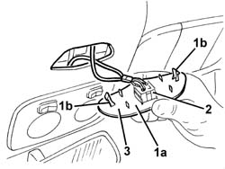

7040H32 sliding roof switch door panel - r r
- Path
- Procedures > 70 FITTINGS > 7040 BODYSHELL INTERIOR TRIMS AND FITTINGS > 7040H roof panel lining > 7040H32 sliding roof switch door panel - r r
- Kind
- repair procedure (removal / refitting; the operation number is the code)
- Applies to
- all engines; all production periods
- Interactive page
- https://sloeber94.github.io/elrnDB-a156/en/#/3238839
Applies to: all engines; all production periods
 Removing
Removing
 Refitting
Refitting1. Release the switch holder trim from the sun roof (1a), releasing the retainers (1b).
2. Release the switch from the trim.
3. Recover the trim.

Applies to: all engines; all production periods
Refitting
RemovingCheck that the trim is not damaged.
Fit the switch in the trim.
Fit the switch holder trim and engage the retainers.